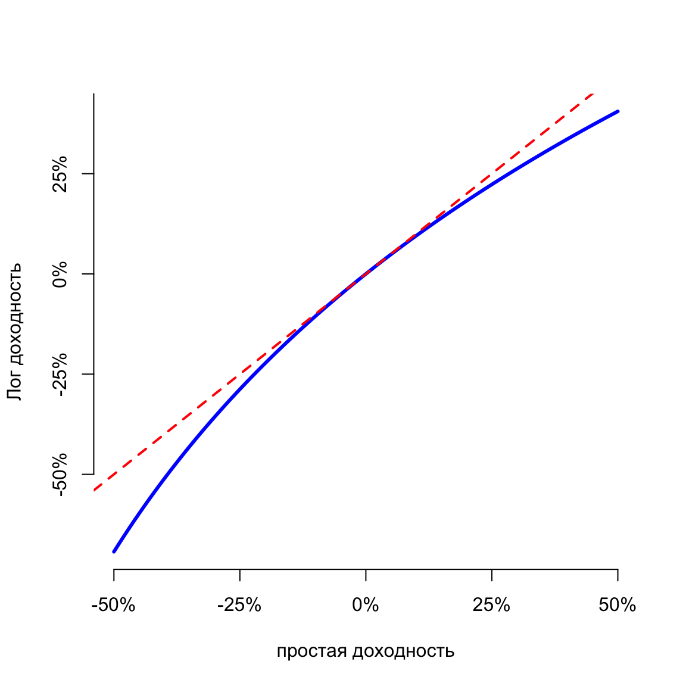

Количественные финансы. Вводная лекция
Салихов Марсель (marcel.salikhov@gmail.com)
2020-11-23
Ваш преподаватель
- Салихов Марсель Робертович – президент Института энергетики и финансов, директор Центра экономической экспертизы ИГМУ ВШЭ
- 15+ лет в работы в консалтинге и исследованиях. Работаю в ВШЭ с 2008 года.
- Основные области специализации - нефтегазовые рынки, российская макроэкономика и финансовые рынки.
- пишу на R с 2012 года, на Python - c 2017 года.
Введение в курс
- Курс по выбору. Фокус – работа с финансовыми данными/построение количественных моделей на практике.
- Основная задача – научиться работать с данными, расширить понимание эконометрических методов в применении к финансам.
- Семинарские занятия – работа с R. Лекции будут доступны на github
- Мы будем говорить как о теории, так и о практике. Оба аспекта важны.
- Отдельный фокус – работа с российскими данными
- Форма контроля – семинарские занятия – лабораторные работы в R (50%), письменный экзамен – тест и задачи (40%), посещаемость (10%).
Структура курса
- Принципы финансов
- Финансовые данные и первичный (исследовательский) количественный анализ
- Обработка и первичный анализ финансовых данных
- Линейные модели финансовых временных рядов (AR, MA, ARMA)
- Модель оценки стоимости капитала (CAPM)
- Риск и волатильность – модели VaR и Expected Shortfall (ES), GARCH
- Портфельная теория
- Модели процентных ставок
- Использование симуляционных моделей для оценки неопределенности – методы Монте-Карло
Основная литература
“An Introduction to Analysis of Financial Data with R” (Ruey S. Tsay)
“Statistics and Data Analysis for Financial Engineering” (David Ruppert & David Matteson)
Зачем вообще изучать финансы?
- Работа в финансовой сфере – банки, инвестиционные компании, фонды и проч.
- Личные финансовые решения – всем придется с этим столкнуться. Необходимо понимать, как устроена финансовая система и учиться принимать рациональные финансовые решения.
- Финансы – это в первую очередь, работа с данными и цифрами. Эти навыки могут пригодиться и в других сферах.
Основные принципы финансов
- Время имеет цену
- Риск требует компенсации (доходности)
- Информация – основа принятия решений
- Цены определяются рынками
- Финансовая устойчивость увеличивает благосостояние
1. Время имеет “цену”
- Время влияет на стоимость финансовых инструментов. Процентная ставка выплачивается, чтобы компенсировать кредитору время, в течение которого заемщик будет пользоваться его деньгами.
- Пример заемщика – кредит на покупку автомобиля. Пример кредитора – вклад в банке.
- Процентные ставки являются фундаментальным понятием в финансах и отражают временную стоимость денег.
2. Риск требует компенсации (доходности)
- Мир по определению полон неопределенности. Поэтому рациональный агент принимает на себя риски только если будет вознагражден.
- В финансах это вознаграждение осуществляется в форме непосредственных платежей: больше риск – больше платеж.
- Управление риском означает, что вы рассматриваете весь спектр возможных исходов. К примеру, вы можете отказаться от некоторых видов риска, снизить другие – заплатив кому-либо и жить с оставшимися рисками. Пример управления риском - страховка на автомобиль.
- Финансовая система помогает управлять рисками.
3. Информация – основа принятия решений
- В современном мире люди собирают информацию прежде, чем принимают решения. Чем более важно решение, тем больше информации мы собираем.
- Сбор и переработка информации для того, чтобы принять решение – основа финансовой системы.
- Пример. Каким образом банк принимает решение о выдаче кредита?
4. Цены определяются рынками
- Понятие рынка лежит в основе современной экономической системы.
- Финансовая система собирает информацию от большего количества участников, агрегирует ее в ценовые стимулы, которые определяют, что ценно, а что – нет.
- Финансовая система, определяя цены на стоимость кредита, стоимость акций и проч. – выступает основой распределения капитала в современных экономиках.
- Развитая и эффективная финансовая система способствует экономическому росту и росту благосостояния.
5. Устойчивость улучшает благосостояние
- Большинство из нас предпочитает стабильные доходы изменяющимся.
- Стабильность является предпочтительной характеристикой и для финансовой системы.
- Обеспечение экономической и финансовой стабильности – одна из основных задач центральных банков.
- Стабильная экономика растет быстрее, чем нестабильная – результаты исследований.
Основные части финансов
- Деньги
- Финансовые инструменты
- Финансовые рынки
- Финансовые институты
- Регулирующие органы
- Центральный банк (денежные власти)
Финансовые инструменты
Примеры финансовых инструментов, которые обеспечивают сохранение стоимости во времени:
- Банковский вклад
- Облигации – форма публичного займа.
- Акции
Примеры инструментов, которые обеспечивают перенос риска:
- Страховка
- Фьючерсный контракт
- Опцион
- Своп
Финансовые рынки
- Финансовые рынки – это места, на которых финансовые инструменты покупаются и продаются.
- Финансовые рынки выполняют несколько основных функций :
- обеспечивают ликвидностью участников
- агрегируют и обеспечивают передачу информации
- обеспечивают распределение риска
Структура финансовых рынков:
- Первичный рынок или Вторичный рынок
- Централизованная площадка (биржа) или OTC (over-the-counter)
- Долговой или Фондовый или Производных инструментов
Финансовые институты
Специализированные финансовые институты снижают транзакционные издержки функционирования финансовой системы.
Основные типы финансовых институтов:
- Банки – принимают вклады и выдают кредиты
- Страховые компании – принимают страховые премии в обмен на принятие рисков определенных событий (страхование имущества, страхование жизни)
- Пенсионные фонды – обеспечивают инвестирование средств участников в ценные бумаги и другие активы.
- Прочие участники рынка ценных бумаг (брокеры, управляющие компании, паевые инвестиционные фонды - ПИФы, хедж-фонды, фонды private equity)
- Государственные финансовые компании (банк развития - ВЭБ, поддержка ипотечного рынка - Агентство по ипотечному жилищному кредитованию (АИЖК), экспортное страхование - ЭСКАР, венчурное финансирование - РВК, private equity – Роснано )
Регулирующие органы и центральный банк
- Государственные органы обеспечивают регулирование финансовой деятельности – устанавливают правила и следят за их выполнением.
- Банк России обеспечивает сейчас регулирование финансовой деятельности и выполняет функции центрального банка (концепция мега-регулятора)
- Центральный банк контролирует доступность денег и кредита с тем, чтобы обеспечить низкую инфляцию, экономический рост и стабильность финансовой системы.
- Министерство финансов РФ осуществляет регулирование отдельных сегментов (к примеру, аудиторов), обеспечивает регулирование в сфере бухгалтерского учета и отчетности (ПБУ - положения о бухгалтерском учете)
- Концепция мега-регулятора
Будущая стоимость (future value)
Рассмотрим подробнее принцип “Время имеет стоимость”.
Будущая стоимость – стоимость инвестиции, сделанной сегодня, на определенную будущую дату.
\[ FV = PV + PV i = PV (1+i) \]
\[ 1000 + 1000 (0.1) = 1100 \]
\[ FV_n = PV (1+i)^n \]
Капитализация процентов
Вопрос. Если вы положите 100 рублей на 3-летний вклад по ставке 10%, сколько вы получите денег через 3 года?
| 1 |
\[100(1.1)\] |
\[110\] |
| 2 |
\[100(1.1)^2\] |
\[121\] |
| 3 |
\[100(1.1)^3\] |
\[133,10\] |
Вопрос. Какая будет сумма, если проценты начисляются не в конце каждого года, а ежемесячно?
Сложные проценты не “в годах”
Формула работает для любых периодов, просто нужно, чтобы \(i\) и \(n\) имели одинаковую размерность! Необходимо трансформировать годовую ставку в месячную.
Пусть \(i^m\) – процентная ставка в месяц, а n – количество месяцев.
тогда итоговая сумма при ежемесячном начислении будет определяется как
\[ (100) (1 + 0.1/12)^{12} = 110,47 \]
За счет ежемесячного начисления процентов вы получаете дополнительно 0,47 рублей
Непрерывно начисляемые доходности (сontinously compounded returns)
| Ежегодно |
1 |
0.1 |
| Полгода |
2 |
0.05 |
| Квартал |
4 |
0.025 |
| Месяц |
12 |
0.0083 |
| Неделя |
52 |
\(\frac{0.1}{52}\) |
| День |
365 |
\(\frac{0.1}{365}\) |
| \(\infty\) |
\(\infty\) |
|
Непрерывно начисляемые доходности (сontinously compounded returns)
\[ 1105.517 = 1000 e^{0.1} \]
Общая формула для непрерывного начисления
\[ FV = PV e^{rn} \] \[ PV = \frac{FV}{e^{rn}}\]
Лог-доходность активов
Если мы поменяем в предыдущей формуле \(PV\) на стоимость актива в момент времени \(t\) (\(P_t\)) и зафиксируем единицу времени, тогда \(FV = P_{t+1}\), тогда
\[e^{r_t} = \frac{P_{t+1}}{P_t} \]
возьмем логарифм и получим сontinously compounded returns или лог-доходность актива:
\[ r_t = ln \frac{P_t}{P_{t-1}} = log(P_t) - log(P_{t-1}) \]
Лог-доходности примерно равны “обычным” доходностям при небольших значениях ставки, так как
\[ log(1+x) \approx x \]
Сравнение обычной и лог-доходностей

Преимущества лог-доходностей
Лог-доходности аддитивны. Доходность за несколько периодов – это просто суммма доходностей за каждый период.
Пример. Акция Газпрома выросла в цене в 2019 году на 50%, во 2020 году упала на 50%. Какова доходность за период 2019-2020?
Какова будет доходность в лог-доходностях?
Дополнительные преимущества – удобные статистические свойства. Поэтому в исследованиях стандартно используют расчеты в лог-доходностях. Практики финансовых рынков используют обычные доходности, так как даже малая ошибка округления недопустима.
Текущая стоимость (present value)
Текущая стоимость - стоимость, “приведенная” по состоянию на сегодня платежа, который должен быть осуществлен в определенный момент в будущем.
\[ PV = \frac{FV}{1+i} \] или для нескольких периодов
\[ PV = \frac{FV_n}{(1+i)^n} \]
Текущая стоимость выше, если:
- Больше стоимость будущего потока платежей \(FV_n\)
- Чем меньше времени до платежа \(n\)
- Чем ниже процентная ставка \(i\)
Понятие риска в финансах – 1
- Риска избежать невозможно
- Любые экономические решения связаны с риском (К примеру, стоит ли покупать КАСКО на автомобиль или ограничиться ОСАГО? Стоит ли брать ипотеку сейчас или подождать?)
- Понимание риска в финансах – в отличие от других сфер жизни – связано с необходимостью измерения риска и оценки справедливой цены за перенос риска от одного участника к другому.
Понятие риска в финансах – 2
- Риск в финансах – это оценка меры неопределенности относительно будущих выплат в течение определенного времени относительно некоторого бенчмарка.
- Риск – величина, которая может быть оценена.
- Риск связан с неопределенностью будущего – мы не знаем точно, какой из будущих возможных вариантов развития событий осуществится.
- Риск связан с будущими выплатами – мы должны представить все возможные варианты и оценить их вероятности.
Понятие риска в финансах – 3
- Понимание риска в финансах относится к инвестиции или совокупности инвестиций. Инвестиции здесь понимаются широко.
- Риск должен измеряться в течение определенного временного периода. В общем случае риск меньше в короткие промежутки времени.
- Риск должен измеряться относительно бенчмарка – стандарта, а не в абсолютном выражении. К примеру, для акций обычно бенчмарк это фондовый индекс, для корпоративных облигаций – процентная ставка по госбумагам (безрисковый актив).
Вероятности и ожидаемая стоимость
- Теория вероятности говорит нам, что для того, чтобы оценить неопределенность, нам необходимо составить список всех возможных исходов и оценить вероятность (шансы) каждого из этих вариантов.
- Вероятность – это мера оценка возможности того, что событие произойдет. Вероятность находится между 0 (событие точно не произойдет) и 1 (событие точно произойдет).
- Сумма вероятностей возможных исходов должна быть равна 1 по определению.
Вероятности и ожидаемая стоимость
- Инвестируем 1000 рублей в покупку акций Газпрома. Возможные исходы:
| №1 |
0,1 |
200 |
| №2 |
0,4 |
700 |
| №3 |
0,4 |
1300 |
| №4 |
0,1 |
2000 |
Ожидаемая стоимость (математическое ожидание) = \[0,1 (200) + 0,4(700) + 0,4 (1300) + 0,1 (2000) = ? \]
Вероятности и ожидаемая стоимость
- Ожидаемые значения удобнее считать в доходностях (returns). Использование относительных мер (процентов) позволяет сравнивать доходности независимо от абсолютной суммы инвестиций.
- Изменчивость исходов приравнивается к риску.
- Безрисковый актив – это инвестиция, будущая стоимость которой известна и доходность которой не связана с риском (выплаты гарантированы и не могут измениться).
Дисперсия и среднеквадратическое отклонение
Дисперсия – это среднее квадратов отклонений возможных исходов от ожидаемого значения, взвешенных согласно их вероятности.
- Рассчитать ожидаемое значение
- Вычесть ожидаемое значение от каждого возможного исхода и возвести в квадрат
- Умножить каждый исход на его вероятность
- Сложить слагаемые
Среднеквадратическое отклонение (СКО) – квадратный корень дисперсии – имеет ту же размерность, что и исходные величины (проценты, рубли, доллары и проч.)
Если две инвестиции имеют одинаковую доходность, но разное СКО, мы предпочитаем инвестицию с меньшим значением СКО как менее рискованную.
Вопросы по лекции